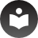

第 11 章 2D SLAM 建图实战¶
前面十章,你已经让 Go2 能动、能听话、能在 RViz 里"照镜子"。但它还没有"空间记忆"—— 走出去十米就不知道自己走了多远,更别提回家。从本章开始,我们给它装上这块记忆。
本章你将学到¶
- 理解激光 SLAM 的基本思路(前端扫描匹配 + 后端图优化 + 回环检测)
- 明白为什么 Go2 的3D 点云要被"压扁"成 2D 激光扫描
- 用 SLAM Toolbox 在线建出一张可用的 2D 栅格地图
- 诊断 3 类典型踩坑:点云时间戳延迟、QoS 策略不兼容、TF 坐标系缺失
- 把建好的地图保存下来,为第 13 章的自主导航打底
背景与原理¶
什么是 SLAM¶
SLAM 全称 Simultaneous Localization And Mapping,同时定位与建图。
想象你第一次进一座迷宫 —— 没有地图,但你得一边走一边做两件事:
- 记住自己在哪(相对于起点往北走了多少、左转了几次)
- 画一张地图(把看到的墙壁、门、拐角记下来)
这两件事是互相依赖的:你得先知道"我在哪",才知道刚刚看到的墙画在地图的什么位置;反过来,地图画出来后又能帮你确认"我真的走到这儿了吗"。
机器人做 SLAM 就是这个过程自动化。算法层面通常拆成三块:
| 模块 | 干什么 | 类比 |
|---|---|---|
| 前端(Scan Matching) | 把当前这一帧激光数据,和上一帧(或最近的关键帧)对齐,算出"我移动了多少" | 数步子 |
| 后端(Graph Optimization) | 把所有关键帧连成一张图,反复微调让整体一致 | 回家后对着笔记把地图画端正 |
| 回环检测(Loop Closure) | 识别出"哎?这地方我好像来过",把累积的误差一次性修正 | 走了一圈发现回到起点,把地图首尾对齐 |
2D 还是 3D?¶
SLAM 按地图维度分 2D(平面栅格)和 3D(点云/体素)两大类。本书第一次建图选 2D,因为:
- 教学友好 —— 一张俯视图,眼睛一看就懂
- 硬件要求低 —— 不需要强劲 GPU
- Nav2 原生支持 —— 下一章导航直接用
- 室内平地够用 —— Go2 的主战场就是这种场景
至于 3D SLAM(KISS-ICP / FAST-LIO / Point-LIO 之类),我们放在第 12 章再讲。
SLAM Toolbox 是什么¶
SLAM Toolbox 是 ROS2 生态里最主流的 2D 激光 SLAM 包。它的卖点:
- 开源、文档全、社区活跃
- 支持在线建图(边走边画) 和 离线建图(回放 bag)
- 支持异步模式(async) —— 不保证每帧都处理,但低延迟,适合实时建图
- 原生支持地图序列化 —— 下次可以继续在这张地图上补建,不用重新开始
本章我们用异步在线模式。
Go2 雷达的"适配问题"¶
Go2 EDU 自带的是 L1 4D 雷达,发布的是 3D 点云(/utlidar/cloud_deskewed)。但 SLAM Toolbox 只吃 2D LaserScan(/scan)。
解决办法:把 3D 点云压扁成 2D 扫描 —— 只保留某个高度区间内的点,投影到一个水平面上。这个活由 ROS2 官方的 pointcloud_to_laserscan 包完成。
为什么这样做不是"掉精度"
建图只关心"哪里能走、哪里是墙"。墙从地面到天花板都是墙,保留 0.1m 高度的那一圈就够判断。天花板和地板,我们主动过滤掉—— 因为地板会被当成"障碍物"把路堵死。
架构总览¶
数据流¶
flowchart TD
A[Go2 UTlidar 硬件] -->|原始 3D 点云| B["/utlidar/cloud_deskewed<br/>(odom 坐标系)"]
B -->|时间戳延迟 ~510s ⚠️| C[pointcloud_timestamp_fix<br/>用当前时间重写时间戳]
C -->|时间戳正确| D["/utlidar/cloud_fixed"]
D --> E[pointcloud_to_laserscan<br/>3D → 2D 投影]
E -->|"/scan (2D 激光扫描)"| F[slam_toolbox<br/>异步在线建图]
F -->|"/map + map→odom TF"| G[RViz 可视化]
H[go2_driver_py] -->|"/odom + odom→base TF"| FTF 树¶
map ← SLAM Toolbox 发布
└── odom ← go2_driver_py 发布(里程计)
└── base ← 机器人躯干中心,离地约 0.31m
├── FL_hip → ... → FL_foot
├── FR_hip → ... → FR_foot
├── RL_hip → ... → RL_foot
├── RR_hip → ... → RR_foot
├── imu
└── radar → utlidar_lidar
坐标系叫 base 不是 base_link
Go2 原生 TF 用的是 base,Nav2 默认期望 base_link。全书统一用 base,凡是第三方配置里写着 base_link 的地方都要改成 base。
环境准备¶
前置成果¶
本章直接复用第 6 章完成的 go2_driver_py 包 —— 它已经能发布 /odom 和 odom→base 的 TF。如果你跳着看到这儿,先回第 6 章把驱动跑起来。
新增依赖¶
打开终端,装三件套:
# slam_toolbox: SLAM 核心包
# pointcloud_to_laserscan: 3D 点云压扁成 2D 扫描
# nav2_map_server: 用来保存地图成 pgm + yaml 格式
# tf2_tools: 可视化 TF 树(调试用)
sudo apt install -y \
ros-humble-slam-toolbox \
ros-humble-pointcloud-to-laserscan \
ros-humble-nav2-map-server \
ros-humble-tf2-tools
检查装没装上:
实现步骤¶
我们会在工作空间里新建两个 ROS2 包:
go2_sensors—— 传感器数据处理(时间戳修复、点云转扫描)go2_slam—— SLAM 配置、启动文件、地图存储
步骤一:创建 go2_sensors 包¶
在工作空间的 src/ 目录下创建感知包:
# 进入工作空间源码目录
cd ~/unitree_go2_ws/src
# 创建 Python 类型的 ROS2 包,声明需要的依赖
ros2 pkg create go2_sensors \
--build-type ament_python \
--dependencies rclpy sensor_msgs
步骤二:写"时间戳修复"节点¶
为什么需要:Go2 的 UTlidar 驱动发布点云时,带的时间戳比系统时间早约 510 秒(原因未明,可能是固件内部时钟漂移)。这会让下游节点查不到对应时刻的 TF,整条管线直接崩掉。
怎么修:写一个"中转节点",收到点云后把时间戳替换成当前系统时间,数据本身不动,再重新发出去。
在 go2_sensors/go2_sensors/ 目录下创建 pointcloud_timestamp_fix.py:
#!/usr/bin/env python3
"""
时间戳修复节点:订阅原始点云,重写时间戳为当前系统时间后重新发布。
专治 Go2 UTlidar 点云时间戳早于系统时间的毛病。
"""
import rclpy # ROS2 Python 客户端库,节点的入口
from rclpy.node import Node # 所有 ROS2 节点的基类
from rclpy.qos import QoSProfile, ReliabilityPolicy, HistoryPolicy # QoS 策略,控制通信可靠性
from sensor_msgs.msg import PointCloud2 # 标准点云消息类型
class PointCloudTimestampFix(Node):
def __init__(self):
super().__init__("pointcloud_timestamp_fix")
# 订阅 QoS:BEST_EFFORT(不保证每一帧都收到,但延迟低)
# 选 BEST_EFFORT 是因为 Go2 驱动发布时兼容这个策略
sub_qos = QoSProfile(
reliability=ReliabilityPolicy.BEST_EFFORT,
history=HistoryPolicy.KEEP_LAST,
depth=5,
)
# 发布 QoS:RELIABLE(保证 SLAM 一帧不漏,必要时重传)
pub_qos = QoSProfile(
reliability=ReliabilityPolicy.RELIABLE,
history=HistoryPolicy.KEEP_LAST,
depth=5,
)
# 订阅原始点云
self.sub = self.create_subscription(
PointCloud2,
"/utlidar/cloud_deskewed",
self.on_cloud,
sub_qos,
)
# 发布时间戳修复后的点云,下游节点来订这个话题
self.pub = self.create_publisher(
PointCloud2,
"/utlidar/cloud_fixed",
pub_qos,
)
self.get_logger().info("时间戳修复节点已启动")
def on_cloud(self, msg: PointCloud2) -> None:
# 用当前系统时间覆盖原来的时间戳,其他字段不动
msg.header.stamp = self.get_clock().now().to_msg()
self.pub.publish(msg)
def main():
rclpy.init()
node = PointCloudTimestampFix()
try:
rclpy.spin(node)
finally:
node.destroy_node()
rclpy.shutdown()
if __name__ == "__main__":
main()
这段代码做了三件事:
- 声明两种 QoS:订阅端宽松(跟得上 Go2 原生驱动就行),发布端严格(不能让 SLAM 丢帧)
- 订阅
/utlidar/cloud_deskewed,在回调里只改header.stamp,其余fields/data完全不动 - 发布到
/utlidar/cloud_fixed,下游节点订这个就拿到时间戳正确的点云
然后把节点注册进 setup.py 的 entry_points:
entry_points={
"console_scripts": [
"pointcloud_timestamp_fix = go2_sensors.pointcloud_timestamp_fix:main",
],
},
步骤三:配置 pointcloud_to_laserscan¶
pointcloud_to_laserscan 是现成的包,我们只需要给它一份参数文件。在 go2_sensors/config/pointcloud_to_laserscan_params.yaml 写:
# 3D 点云 → 2D 扫描 的转换参数
/pointcloud_to_laserscan_node:
ros__parameters:
# ---- 坐标系 ----
target_frame: base # 输出的 LaserScan 定义在 base 坐标系下
# ---- 高度过滤(相对 base 坐标系)----
# base 原点离地面 ~0.31m,即地面在 base 中 Z ≈ -0.31
min_height: -0.28 # 略高于地面,防止地面反射当障碍
max_height: 1.0 # 足够覆盖大部分室内障碍(桌椅/人)
# ---- 距离过滤 ----
range_min: 0.3 # 低于此距离的点视为自身反射或近场噪声
range_max: 20.0 # L1 雷达有效测距远端
# ---- 角度分辨率 ----
angle_increment: 0.0087 # 约 0.5°/射线,一圈 723 射线
# ---- 性能 ----
use_inf: true # 无返回时填 inf 而非最大距离(SLAM 更稳)
高度过滤参数是调出来的,不是算出来的
我们用对照实验测过三组参数:
| min_height | max_height | range_min | 有效射线 | 平均距离 | 评价 |
|---|---|---|---|---|---|
| -0.5 | 1.0 | 0.1 | 255 (35%) | 0.79 m | 地面噪声太多,墙壁被淹没 |
| -0.1 | 0.5 | 0.1 | 61 (8%) | 2.25 m | 过滤过头,看不到桌椅 |
| -0.28 | 1.0 | 0.3 | 51 (7%) | 4.75 m | 本书选用 |
别看有效射线只有 7%,这些射线的"信噪比"最高,建出的地图最干净。
步骤四:创建 go2_slam 包¶
cd ~/unitree_go2_ws/src
# SLAM 包只放配置和 launch,不需要 Python 节点,用最轻的 ament_cmake 即可
ros2 pkg create go2_slam \
--build-type ament_cmake
建立子目录:
步骤五:配置 SLAM Toolbox¶
在 go2_slam/config/slam_toolbox_params.yaml 写:
# SLAM Toolbox 异步在线建图参数
slam_toolbox:
ros__parameters:
# ---- 运行模式 ----
use_sim_time: false # 实机运行,使用系统时间
mode: mapping # mapping(建图) / localization(纯定位)
# ---- 坐标系 ----
odom_frame: odom
map_frame: map
base_frame: base # ⚠ Go2 用 base 不是 base_link
scan_topic: /scan
# ---- QoS 匹配 ----
# /scan 上游用 BEST_EFFORT,这里必须对齐,否则订不到
qos_overrides:
/scan:
subscription:
reliability: best_effort
# ---- 建图触发条件 ----
# 机器人移动/转动超过阈值才触发一次新的关键帧,避免同一位置刷帧
minimum_travel_distance: 0.2 # 移动 0.2 m 才更新
minimum_travel_heading: 0.2 # 转动 0.2 rad(~11.5°)才更新
# ---- 地图参数 ----
resolution: 0.05 # 5 cm / 像素,室内场景够用
map_update_interval: 5.0 # 每 5 秒向 /map 话题推一次最新地图
# ---- 回环检测 ----
do_loop_closing: true # 开启回环,绕一圈能对齐的话地图质量大大提升
loop_search_maximum_distance: 3.0
loop_match_minimum_chain_size: 10
# ---- 扫描匹配参数(默认值通常够用,列出来便于调优)----
link_match_minimum_response_fine: 0.1
correlation_search_space_dimension: 0.5
correlation_search_space_resolution: 0.01
fine_search_angle_offset: 0.00349
coarse_search_angle_offset: 0.349
步骤六:写一键启动 launch¶
一次启动涉及的节点挺多,手工敲 7 个终端太痛苦。我们写一个 launch 文件把它们串起来。go2_slam/launch/mapping.launch.py:
"""
一键启动建图:驱动 + 传感器处理 + SLAM + RViz
"""
from pathlib import Path # 处理 launch 文件内的相对路径
from launch import LaunchDescription # ROS2 launch 的顶层描述对象
from launch_ros.actions import Node # 启动一个 ROS2 节点
from launch.actions import IncludeLaunchDescription # 嵌套另一个 launch 文件
from launch.launch_description_sources import PythonLaunchDescriptionSource
from ament_index_python.packages import get_package_share_directory
def generate_launch_description():
# 本包的 share 目录,用来定位 config 文件
slam_share = Path(get_package_share_directory("go2_slam"))
sensors_share = Path(get_package_share_directory("go2_sensors"))
slam_params = str(slam_share / "config" / "slam_toolbox_params.yaml")
scan_params = str(sensors_share / "config" / "pointcloud_to_laserscan_params.yaml")
# 1) Go2 驱动 —— 复用第 6 章的包,提供 odom/TF
driver = IncludeLaunchDescription(
PythonLaunchDescriptionSource(
str(Path(get_package_share_directory("go2_driver_py"))
/ "launch" / "driver.launch.py")
)
)
# 2) 时间戳修复 —— 第 11 章新增
timestamp_fix = Node(
package="go2_sensors",
executable="pointcloud_timestamp_fix",
name="pointcloud_timestamp_fix",
output="screen",
)
# 3) 3D 点云 → 2D 扫描
pc_to_scan = Node(
package="pointcloud_to_laserscan",
executable="pointcloud_to_laserscan_node",
name="pointcloud_to_laserscan_node",
parameters=[scan_params],
remappings=[
("cloud_in", "/utlidar/cloud_fixed"), # 订时间戳修复后的点云
("scan", "/scan"), # 输出标准 /scan 话题
],
output="screen",
)
# 4) SLAM Toolbox 本体
slam = Node(
package="slam_toolbox",
executable="async_slam_toolbox_node",
name="slam_toolbox",
parameters=[slam_params],
output="screen",
)
# 5) RViz —— 加载 SLAM 专用配置(Fixed Frame = map)
rviz_cfg = str(slam_share / "config" / "slam.rviz")
rviz = Node(
package="rviz2",
executable="rviz2",
arguments=["-d", rviz_cfg],
output="screen",
)
return LaunchDescription([driver, timestamp_fix, pc_to_scan, slam, rviz])
步骤七:准备 RViz 配置¶
最后在 go2_slam/config/slam.rviz 保存一个专用 RViz 布局:
- Fixed Frame:
map(建图时要站在地图视角看机器人移动) - 显示项:Map + LaserScan(颜色选绿、Reliability 选
Best Effort) + RobotModel + TF - 视角:
TopDownOrtho(俯视正交,2D 地图看得最清)
RViz 配置文件怎么来
实际操作:在 RViz 里手动布好界面 → File → Save Config As → 存到 go2_slam/config/slam.rviz。之后每次 launch 自动加载。
编译与运行¶
编译¶
# 回到工作空间根目录
cd ~/unitree_go2_ws
# 只编译本章新增的两个包,节省时间
colcon build --packages-select go2_sensors go2_slam
# 加载编译产物到当前终端
source install/setup.bash
启动建图¶
启动后你会看到:
- 终端刷出 5 个节点的启动日志
- RViz 弹出,左上角 Fixed Frame 是
map - 几秒后,机器人模型出现,周围开始画出 2D 地图雏形
操控机器人建图¶
新开一个终端,用第 3 章的键盘节点驱动 Go2 慢慢走:
# 记得先 source
source ~/unitree_go2_ws/install/setup.bash
# 启动键盘控制
ros2 run go2_teleop_ctrl_keyboard go2_teleop_ctrl_keyboard
建图小技巧:
- 🐢 慢走 —— 每秒 0.2 m 最稳;快走会让扫描匹配失败,地图出现扭曲
- 🔄 尽量绕圈回起点 —— 触发回环检测,地图一次性对齐
- 🧱 特征丰富的路径优先 —— 空旷走廊建图质量差,因为扫描匹配找不到参照
- 👀 实时看 RViz —— 发现地图歪了/重影了,马上停,排查问题比硬建强
保存地图¶
建完满意后,不要关终端,新开一个终端保存地图:
# 保存为标准 pgm + yaml 格式,给下一章 Nav2 用
ros2 run nav2_map_server map_saver_cli \
-f ~/unitree_go2_ws/src/go2_slam/maps/my_map
你会得到两个文件:
my_map.pgm—— 地图图像(黑=障碍、白=空地、灰=未知)my_map.yaml—— 元数据(分辨率、原点、阈值)
如果希望下次继续在这张地图上补建,用 SLAM Toolbox 的序列化功能:
# 序列化保存,包含位姿图信息,可恢复
ros2 service call /slam_toolbox/serialize_map \
slam_toolbox/srv/SerializePoseGraph \
"{filename: 'my_map'}"
结果验证¶

命令行检查¶
打开另一个终端,依次跑:
# 1) /scan 话题应该有数据,类型是 LaserScan
ros2 topic echo /scan --no-arr --once
# 2) /map 话题应该在推送 OccupancyGrid
ros2 topic hz /map
# 3) TF 树应该是连通的: map → odom → base → 各关节
ros2 run tf2_tools view_frames
# 会在当前目录生成 frames.pdf,用 PDF 阅读器打开检查
正常标志:
/scan有稳定的ranges数组输出(~723 个数值)/map话题频率在 0.2 Hz 左右(5 秒一帧,与map_update_interval对应)frames.pdf里能看到从map一路连到base,中间无断裂
地图质量自检¶
建图结束后打开 my_map.pgm:
- ✅ 好地图:墙壁连续、拐角清晰、房间轮廓闭合
- ❌ 差地图的常见症状:
- 一堵墙画成两条平行线 → 回环检测没触发,或者走太快
- 整张图歪斜 → 里程计漂移严重,需要 IMU 融合(进阶话题,本书暂不展开)
- 地板被画成障碍 →
min_height设太低
常见问题¶
Q1: 启动后 /scan 话题没数据¶
排查顺序:
# 1. 检查原始点云是否在发
ros2 topic hz /utlidar/cloud_deskewed
# 没输出 → Go2 雷达驱动没起;检查 unitree_ros2 setup.sh 有没 source
# 2. 检查时间戳修复节点是否在发
ros2 topic hz /utlidar/cloud_fixed
# 没输出 → pointcloud_timestamp_fix 没启,看 launch 日志
# 3. 检查 pointcloud_to_laserscan 节点
ros2 node list | grep pointcloud_to_laserscan
# 没有 → launch 里的节点配置有误
Q2: 地图出现"鬼影"(同一墙壁画在多个位置)¶
典型原因:机器人被抱起/猛推/滑了一下,里程计瞬间跳变,SLAM 没跟上。
应对:
- 建图时不要强行抬起或推机器人
- 若已经出现鬼影,可以用 SLAM Toolbox 的手动清除服务:
- 终极方案:IMU 融合(用
robot_localization做 EKF),不在本章范围,留作进阶
Q3: RViz 报 "Transform data too old" 或 "Lookup would require extrapolation"¶
原因:TF 时间戳和查询时间对不上,常见于时间戳修复节点没起来。
快速判断:
# 看看 cloud_fixed 的 header.stamp 是不是接近系统时间
ros2 topic echo /utlidar/cloud_fixed --no-arr --once
# 对比 `date +%s.%N` 的输出,差值应该在 1 秒内
如果差值很大(几百秒),说明你订到的是没修过的 cloud_deskewed,检查 launch 里 remappings 的配置。
Q4: SLAM Toolbox 收不到 /scan¶
原因 9 成是 QoS 不匹配。SLAM Toolbox 默认用 RELIABLE 订阅,而我们的 /scan 是 BEST_EFFORT 发布。
验证:
# -v 展开显示 QoS 信息
ros2 topic info /scan -v
# 找 "Reliability: BEST_EFFORT" 和 "Reliability: RELIABLE" 的发订者
# 发布 BEST_EFFORT + 订阅 RELIABLE = 兼容不上
修复:确认 slam_toolbox_params.yaml 里有 qos_overrides 段,并重启 SLAM 节点。
Q5: 机器人不动 / 动了但 /odom 不变¶
检查第 6 章的 go2_driver_py 有没有起来:
没起就单独 launch 驱动,再看一遍本章步骤。
本章小结¶
- SLAM = 前端(扫描匹配) + 后端(图优化) + 回环检测,让机器人边走边画边修正
- Go2 的 3D 点云需要过滤高度 + 压扁成 2D 扫描才能喂给 SLAM Toolbox
- 实战中踩了三个典型坑:时间戳延迟、QoS 不对齐、TF 要用
base不是base_link—— 记住这三点能省一天调试 - 建完地图用
nav2_map_server保存成 pgm + yaml,下一章 Nav2 要加载它
下一步¶
本章的地图只是"看着像样"。真正的考验是 —— 让 Go2 加载这张地图、自己找到起点、然后自主走到你指定的目标。那就是 第 12 章 Nav2 基线导航 的任务。
第 12 章我们会先绕个小弯,对比 3D SLAM 的几个主流方案(KISS-ICP / FAST-LIO / Point-LIO),给想进一步折腾的同学一条路径。只想把 Go2 用起来的同学可以跳过 12 章直奔 13 章。
拓展阅读¶
- SLAM Toolbox 官方仓库 —— https://github.com/SteveMacenski/slam_toolbox
pointcloud_to_laserscan官方包 —— https://github.com/ros-perception/pointcloud_to_laserscan- 《概率机器人》(Probabilistic Robotics) —— Thrun 等著,想啃算法底层的必读
- ROS2 TF2 教程 —— https://docs.ros.org/en/humble/Tutorials/Intermediate/Tf2/Tf2-Main.html
- 激光 SLAM 综述(中文) —— 《视觉 SLAM 十四讲》高翔,虽然主讲视觉 SLAM,但前端后端那套通用